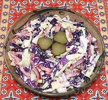

|
Cabbage Sweet Pickle SaladPoland - sałatka z kapusty i słodkiej marynaty | ||||
| Makes: Effort: Sched: DoAhead: |
1 # * 35+ min Best |
A quick, but fine and attractive salad you need make no apologies for. It works well on the buffet (but make more). As given it will make 4 salad size servings. See also Comments. | |||
|
12 1 4 2 1/2 5 |
oz oz oz oz t T |
Cabbage Onion Bell Pepper Sweet Pickle Salt Mayonnaise |
Make - (35 min, + rest)
|